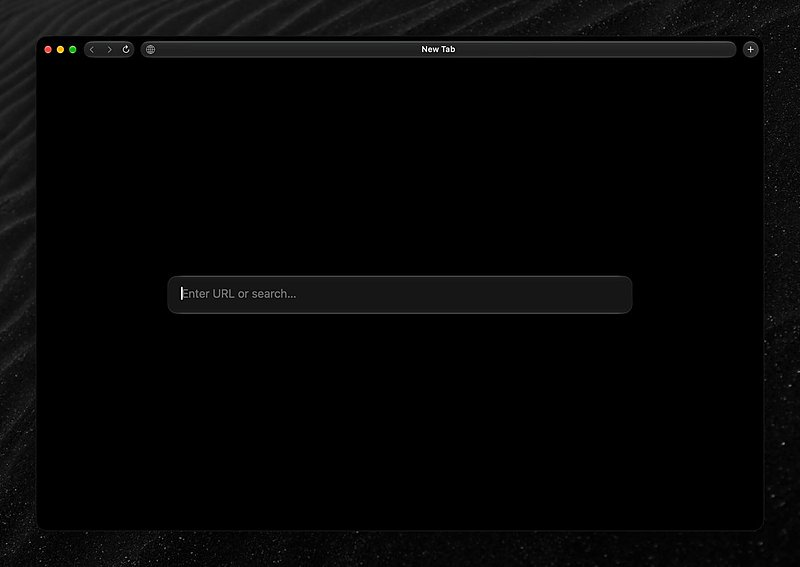
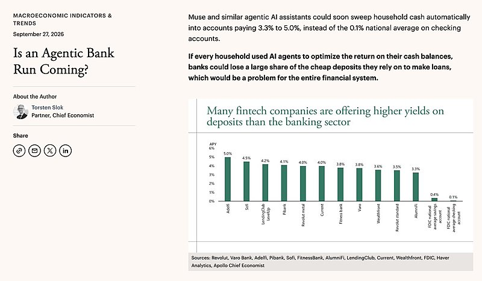

AI 日报 · 9月29日
Sonnet 5.5 推进任务效率，Agent 价值仍要进入工作流
Anthropic 发布 Sonnet 5.5，强调更快生成与较低任务成本；Sequoia 对谈解释企业工作流的连接层，Builder 原帖提醒落地时保留验证。
Sonnet 5.5
Agent 工作流
原生应用
GitHub Trending
6
Builder 动态
5
持续在榜项目
3
官方与 RSS
1
深度对话
今日要点
Anthropic 9 月 28 日发布 Sonnet 5.5。官方称相较 Sonnet 5 输出快 30% 以上、在其测试中完成多数任务的成本最高降低 30%；API 输入与输出单价保持同档。数字属于厂商测试口径。
Box 的 Aaron Levie 在 Sequoia 对谈中讨论应用层。他的观点是企业使用 Agent 仍需连接文档、搜索、权限及人工环节；这为评估新模型提供了工作流视角。
深度对话
Training Data：Aaron Levie 谈企业 AI 的连接层
这期 Sequoia《Training Data》于 9 月 15 日发布，Sonya Huang 对谈 Box 联合创始人兼 CEO Aaron Levie。节目提供原视频和逐字稿；以下是受访者观点，不代表已验证的行业共识。
应用层连接模型与真实业务
Levie 认为，模型能力要进入银行、律所等场景，必须处理数据系统、权限、人工审批与既有流程。
Agent harness 需要针对系统调校
他以 Box 的文件系统、权限和搜索为例，讨论为何专门设计的 harness 与评测会影响任务准确性和响应时间。
代码扩散速度难直接复制到知识工作
对谈指出，代码通常有较清晰的仓库与检验路径；销售等知识工作缺少同样统一的输入与验证界面。
预测应与事实分开
Levie 预测未来企业 token 使用中将有大量工作并非由人直接发起。这是个人预测，日报不把它当作当前统计。
RSS 精选
官方公告与订阅更新
建造者动态
Builder 观点与实践
Guillermo Rauch｜把 Mini 浏览器移向原生实现
Rauch 介绍将自己的 Mini 浏览器移向 Rust 与 Swift：以 cef 嵌入 Chromium，通过 ACP 接入本地 agent。他称启动与迭代体验改善；这些是作者的项目体验，尚非独立性能测评。

Aaron Levie｜Agent 可能改变用户切换服务的成本
Levie 思考，若 agent 更容易替用户比较并执行选择，依靠用户切换摩擦获益的市场可能面临更强竞争；他同时认为某些高摩擦市场会出现新增活动。这是判断，不是已发生的市场结果。

Thariq｜别把 Agent 的效率红利耗在懈怠上
Thariq 表达了一个担忧：Agent 带来的生产率收益，可能被使用者自身降低投入抵消。帖子是一句个人提醒，没有给出量化证据。
Peter Steinberger｜设想让 Codex 缩减 CI 任务
Steinberger 表示，他计划让 Codex 判断哪些测试真正需要运行，减少 CI 测试量，并改为按小时运行部分测试。这仍是计划，不能视为已经验证的最佳实践。
Zara Zhang｜新技术的光芒也会遮住问题
Zhang 提醒，新技术的吸引力可能让人忽视实际不顺畅的地方，还容易把工具缺陷误认为自己的问题。这是产品体验层面的观察。
Thibault Sottiaux｜重新思考发布前的代码冻结
Sottiaux 认为发布前的 code freeze 已不再像过去一样固定，并设想未来代码甚至可能按请求约束即时生成。后半句是前瞻判断。
GitHub Trending
今日持续在榜的开源项目


项目来自 9 月 29 日 GitHub Trending 当日列表，部分已在昨日出现；星标和 Fork 为当日 10:09（北京时间）GitHub API 快照，数字会变化。
今日思考
把“更快”换算成可验证的工作
模型发布可以带来更快的输出，但真正的收益还取决于任务定义、数据权限、核验步骤与人的判断。面对“每项任务成本”或“生产率”的说法，先问测试口径是否与你的工作相同，再决定如何改流程。核对 Sonnet 5.5 官方口径 →
今日一问：你会用哪一个真实任务比较模型速度、质量与总成本？
今日一问：你会用哪一个真实任务比较模型速度、质量与总成本？
参考来源
Anthropic：Claude Sonnet 5.5
Sequoia：Aaron Levie 对谈与逐字稿
Sequoia 对谈原视频
AI前线：商业模式讨论
AI前线：Agent 隔离调查报道
Guillermo Rauch｜把 Mini 浏览器移向原生实现
Aaron Levie｜Agent 可能改变用户切换服务的成本
Thariq｜别把 Agent 的效率红利耗在懈怠上
Peter Steinberger｜设想让 Codex 缩减 CI 任务
Zara Zhang｜新技术的光芒也会遮住问题
Thibault Sottiaux｜重新思考发布前的代码冻结
GitHub：9 月 29 日 Trending
debpalash/VoiceStudio
paperclipai/paperclip
vectorize-io/hindsight
mvschwarz/openrig
dream-num/univer